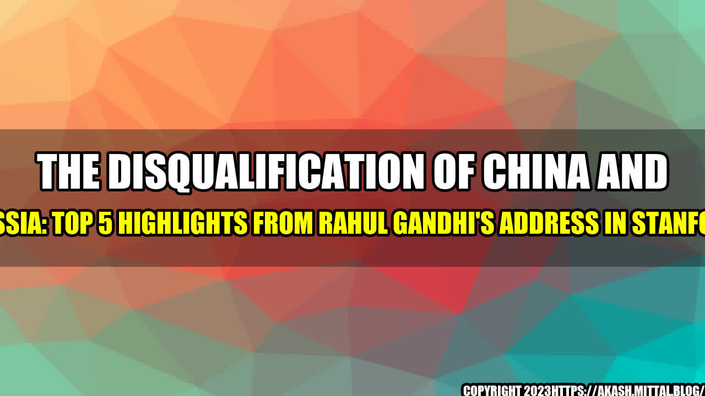

The Disqualification of China and Russia: Top 5 Highlights from Rahul Gandhi's Address in Stanford

As the sun set on Stanford University, the stage was set for Rahul Gandhi, the former president of India's Congress Party, to deliver his address to the students and faculty members. He embarked on a journey that clarified the blurry vision of India's foreign policies, shed light on the disqualification of China and Russia, and explained the importance of knowledge and education in society.
Rahul Gandhi narrated an incident about a soldier who fought in the World War II. The soldier had a tough time adjusting to the post-war era and was plagued with unemployment. He joined a flying club to start a business venture. One day, while flying his plane, he saw the world from a different lens- he could see the beauty in the patchwork of fields, the shadows cast by the clouds, and the infinite vastness of the sky. The soldier realized that he had found happiness through the pursuit of his passion- flying planes. This story highlights the importance of education and the exploration of one's inner self.
- Rahul Gandhi stated that India's military budget is a fraction of China's military budget- around 70 billion USD compared to China's 261 billion USD. Despite this, India has managed to hold its own against China in the recent border skirmish.
- He also highlighted how China's Belt and Road Initiative, which aims to strengthen China's economic ties to other countries through infrastructure investments, has been met with backlash. Pakistan, a key player in China's plan, has already defaulted on the loans provided by China.
- Rahul Gandhi also stressed that India has a solid educational system, with some of the top schools in the world situated in India. However, there is still room for improvement, with a lot of focus needed on the quality of education in government schools.
- An example was given of how knowledge and education can help overcome adversity. He cited the story of a woman named Zainab, who lost her son in a terrorist attack. Instead of being consumed by grief, she went on to start a school for children in her community, dedicating her life to education.
- Rahul Gandhi also emphasized the importance of building relationships with other countries based on mutual respect and understanding, as opposed to a transactional approach. He described how India and the United States have strengthened their bonds by recognizing and respecting the shared values of democracy and freedom.
An
The Disqualification of China and Russia: Top 5 Highlights from Rahul Gandhi's Address in Stanford
- Rahul Gandhi's address shed light on India's foreign policies and the disqualification of China and Russia.
- Education and knowledge are important aspects of society that need to be prioritized for overall development.
- Building relationships based on mutual respect and understanding is essential for a harmonious world.
and Case Studies
Rahul Gandhi narrated his experience of how education helped him build relationships with people from different backgrounds. He talked about his time in the United Kingdom, where he met people from various countries and felt enriched by their diverse perspectives. Similarly, he talked about how his travels across India had opened his eyes to the vastness of the country, and the rich cultural tapestry that defines it.
Rahul Gandhi also shared a story of a man he met who lived in a rural village. The man, who was illiterate, emphasized the importance of education for his children, so they could have a better life than he did.
Practical Tips
- Invest in education: Encouraging children to attend school and providing them with the necessary resources can help build a better future for them and for society as a whole.
- Build relationships based on mutual respect and understanding: This can lead to more fruitful and rewarding partnerships than when relationships are purely transactional in nature.
- Embrace diversity: Learning about different cultures and perspectives can broaden one's outlook on life and lead to personal growth.
References and Hashtags
References:
- https://www.ndtv.com/india-news/in-stanford-speech-rahul-gandhi-slams-briefing-foreign-envoys-amid-tensions-with-china-2270769
- https://www.indiatoday.in/india/story/rahul-gandhi-we-need-strong-economic-state-for-strong-defence-1735869-2020-12-02
- https://www.thequint.com/news/india/rahul-gandhi-stanford-university-lecture-military-might-education
Hashtags:
- #RahulGandhi
- #ForeignPolicy
- #ChinaRussiaDisqualification
- #Education
- #India
- #InternationalRelations
Article Category: Political Science
Curated by Team Akash.Mittal.Blog
Share on Twitter Share on LinkedIn